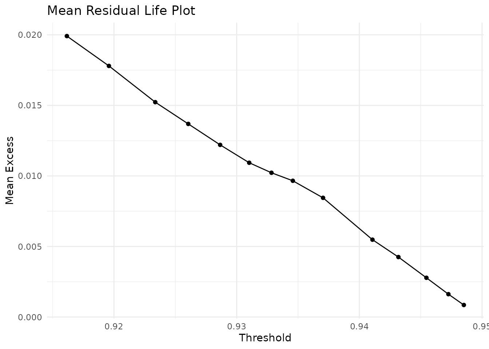
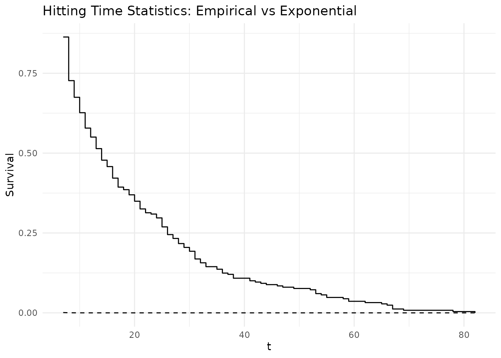

Estimating the Extremal Index for the Logistic Map
chaoticds package
2026-09-18
Source:vignettes/estimating-theta-logistic.Rmd
estimating-theta-logistic.RmdIntroduction
The extremal index is a key parameter in extreme value theory that measures the degree of clustering in extreme events. For a stationary sequence, where:
- indicates no clustering (extremes occur in isolation)
- indicates clustering (extremes tend to occur in groups)
This vignette demonstrates how to estimate for the chaotic logistic map using the chaoticds package.
The Logistic Map
The logistic map is defined as:
For , the map exhibits chaotic behavior with interesting extreme value properties.
library(chaoticds)
# Load the pre-generated dataset
data(logistic_ts)
# Basic properties
cat("Time series length:", length(logistic_ts), "\n")
#> Time series length: 5000
cat("Range: [", round(min(logistic_ts), 3), ",", round(max(logistic_ts), 3), "]\n")
#> Range: [ 0.181 , 0.95 ]
cat("Mean:", round(mean(logistic_ts), 3), "\n")
#> Mean: 0.642
plot(logistic_ts[1:1000], type = "l",
main = "Logistic Map Time Series (r = 3.8)",
xlab = "Time", ylab = "Value")Logistic map time series (first 1000 observations)
Threshold Selection
Choosing an appropriate threshold is crucial for extremal index estimation. We use diagnostic plots to guide our selection.
# Define candidate thresholds
thresholds <- quantile(logistic_ts, probs = seq(0.85, 0.98, by = 0.01))
# Mean Residual Life plot for threshold selection
mrl_data <- mean_residual_life(logistic_ts, thresholds)
mrl_plot(mrl_data)
Mean Residual Life plot for threshold selection
For this analysis, we’ll use the 95th percentile as our threshold:
threshold <- quantile(logistic_ts, 0.95)
cat("Selected threshold:", round(threshold, 4), "\n")
#> Selected threshold: 0.9432
# Number of exceedances
exc <- exceedances(logistic_ts, threshold)
cat("Number of exceedances:", length(exc), "\n")
#> Number of exceedances: 250
cat("Exceedance rate:", round(length(exc)/length(logistic_ts), 3), "\n")
#> Exceedance rate: 0.05Extremal Index Estimation
Runs Estimator
The runs estimator counts clusters based on run lengths:
# Try different run lengths
run_lengths <- 1:8
theta_runs_vec <- sapply(run_lengths, function(r) {
result <- extremal_index_runs(logistic_ts, threshold, run_length = r)
if(length(result) == 0) NA else result
})
# Display results
results_df <- data.frame(
run_length = run_lengths,
theta_estimate = theta_runs_vec
)
print(results_df)
#> run_length theta_estimate
#> 1 1 1.000
#> 2 2 1.000
#> 3 3 1.000
#> 4 4 1.000
#> 5 5 1.000
#> 6 6 1.000
#> 7 7 0.864
#> 8 8 0.728Intervals Estimator
The intervals estimator provides an alternative approach:
theta_intervals <- extremal_index_intervals(logistic_ts, threshold)
cat("Intervals estimator result:", theta_intervals, "\n")
#> Intervals estimator result: 3Cluster Analysis
Understanding the structure of extreme clusters provides additional insight:
# Analyze cluster sizes with smaller run length to find clusters
sizes <- cluster_sizes(logistic_ts, threshold, run_length = 1)
if(length(sizes) > 0) {
cat("Cluster statistics:\n")
summary_stats <- cluster_summary(sizes)
cat(" Number of clusters:", length(sizes), "\n")
cat(" Mean cluster size:", round(summary_stats[["mean_size"]], 2), "\n")
cat(" Cluster size variance:", round(summary_stats[["var_size"]], 2), "\n")
cat(" Max cluster size:", max(sizes), "\n")
} else {
cat("No clusters found\n")
}
#> Cluster statistics:
#> Number of clusters: 250
#> Mean cluster size: 1
#> Cluster size variance: 0
#> Max cluster size: 1Hitting Time Analysis
Hitting times provide another perspective on extremal behavior:
# Calculate hitting times
hts <- hitting_times(logistic_ts, threshold)
if(length(hts) > 0) {
cat("Hitting time statistics:\n")
cat(" Number of hitting times:", length(hts), "\n")
cat(" Mean hitting time:", round(mean(hts), 2), "\n")
cat(" Median hitting time:", median(hts), "\n")
# Plot hitting times if we have a valid theta estimate
valid_theta <- theta_runs_vec[!is.na(theta_runs_vec)]
if(length(valid_theta) > 0) {
plot_hts(hts, valid_theta[1])
}
}
#> Hitting time statistics:
#> Number of hitting times: 249
#> Mean hitting time: 20
#> Median hitting time: 14
Conclusions
This analysis demonstrates the estimation of the extremal index for the chaotic logistic map. The logistic map exhibits complex extreme value behavior that can be characterized using the tools in the chaoticds package.
Further Reading
- Leadbetter, M.R., Lindgren, G., & Rootzén, H. (1983). Extremes and Related Properties of Random Sequences and Processes
- Freitas, A.C.M., Freitas, J.M., & Todd, M. (2010). Hitting time statistics and extreme value theory. Probability Theory and Related Fields
- Lucarini, V. et al. (2016). Extremes and Recurrence in Dynamical Systems